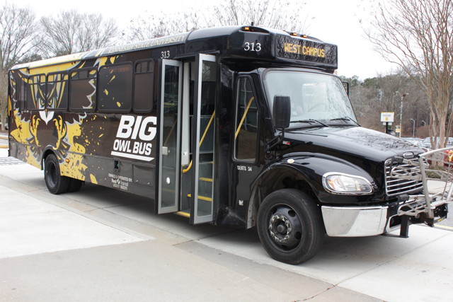
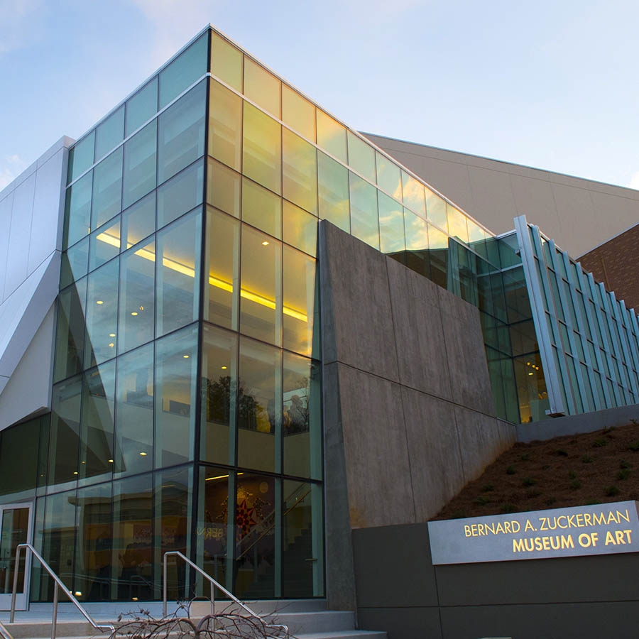

Project 3: Improvement of KSU
I am a Kennesaw State University Owl, and proudly so. However, I live on the Marietta Campus: one that is generally considered seedier, less well-equipped, and all around in worse shape than its larger main counterpart.
I'm not saying they're wrong. I'm just saying that I've thought of ways to make it better.
Building Better Busses
I do not drive, I take busses or Uber everywhere I need to go. This proved a problem when the number of busses on the campus proved to be small, especially for the Marietta Campus. We only had two routes to our name, and one just went to the other campus. As if that wasn't enough, the busses were often used for special events, which meant that sometimes I would have to Uber my way back from the main campus afterwards- costing me precious money. It was at that point that I decided enough was enough, and that I would incorporate it into a project.
Ultimately, I did find someone who shared my vision, a boy namedAiden. Aiden and I proved to be quite the team- I lead the charge on ideas, while he wrote up the report. Both of us presented, dividing it up evenly.
Museum Mayhem
This one was basically the opposite of the first betterment project. Instead of leading the charge, I was following in the shadow of someone who was fiercely passionate about the subject. This time, it was about the museum, and the lack of student-based events there.
In this case, the one leading the duo was a woman named Uchenna. She was an incredible leader, and definitely someone I could look to for motivation and guidance. In all honesty, I did the grunt work- writing frames for the report so that she could fill in with her own ideas and specific thoughts. However, sometimes you need people to do the grunt work in order to make things go smoothly.